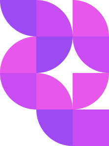

Your Issue
What's your Mental Health Issue?
It also helps determine how we handle stress, relate to others, and make choices. Mental health is important at every stage of life, from childhood and adolescence through adulthood
Trust Issue
You have lost trust in the people you care about because you have been disappointed so many times
Inscure
you have a sense of insecurity to others because you feel the worst even though you are fine


Overthingking
you feel overthinking to the future, this is a bad problem that should be avoided because it is just a waste of time